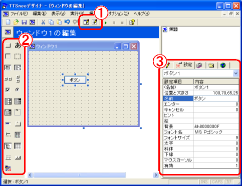
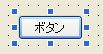
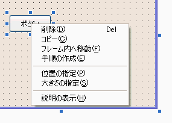
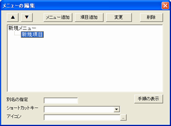

「ウィンドウの設計」を表示するには、メニューから「表示」－「ウィンドウの設計」を選ぶか、次の①の「ウィンドウの設計」ボタンをクリックします。
どの種類のウィンドウを作成するのかを選択するウィンドウが表示されます。

① 「ウィンドウの設計」ボタンと「プログラムの編集」ボタン
上側のツールバーから、ウィンドウの設計とプログラムの編集を切り替えることができます。
② ツールボックス
貼り付けることができるオブジェクトがアイコンで表示されています。
貼り付けたいオブジェクトを選んだ後、中央のウィンドウに貼り付けます。③ 「設定」タブ
貼り付けたオブジェクトの名前や色などの設定項目が表示されています。
ウィンドウの設計の左側(①)には、オブジェクトの一覧がアイコンで表示されています。
下の手順で、この中から貼り付けるオブジェクトを選び、ウィンドウに貼り付けていきます。１．貼り付けるオブジェクトのアイコンを選択する
２．中央のウィンドウで、ドラッグして大きさを決めて離すか、クリックします。
３．部品が貼り付けられます。
４．クリックして貼り付けた場合は、８方向の□を使って大きさを調整します。
※ドラッグ・・・マウスのボタンを押しながら引きずること
位置を移動する
移動したいオブジェクトを選択して、ドラッグします。
[Ctrl]キーを押しながら、カーソルキーを押すことで、1ピクセルずつ移動できます。
大きさを変更する
移動したいオブジェクトを選択して、８方向の□を使って大きさを調整します。
※右側の「編集」タブで直接、値を指定することでも位置や大きさを変えることができます
オブジェクトをフレームやピクチャーの中に移動する
フレームとピクチャーでは、その中に別のオブジェクトを入れることができます。
オブジェクトを選択して、[Shift]キーを押しながら、ドラッグすることで、フレームやピクチャーの中へ移動できます。（マウスカーソルが変化します）
また、右クリックして「フレームへ移動」をクリックして、
一覧から、移動先のフレームまたはピクチャーオブジェクトを選択することでも移動できます。
（「ウィンドウ」を選ぶとフレームやピクチャーにあるオブジェクトからウィンドウへ移動します）※Windows XPではフレームに直接オブジェクトを貼り付けると、うまく表示できないものがあります
フレームの上に土台となるピクチャーを貼り付けて、その中に他の部品を貼り付けてください。
ピクチャーの中に直接、オブジェクトを貼り付ける
ピクチャーオブジェクトに限り、ウィンドウと同様に直接、新しいオブジェクトを作ることができます。
選択状態で利用できるショートカットキー
オブジェクトを選択した状態では、次のキーが利用できます。
利用できるキー 説明 カーソルキー オブジェクトを10ピクセル単位で移動します コンテキストメニューキー 各種メニューを表示します F1 オブジェクトのヘルプを表示します [Delete] オブジェクトを削除します [Ctrl]+カーソルキー オブジェクトを1ピクセルずつ移動します [Shift]+ドラッグ オブジェクトをフレーム／ピクチャーオブジェクトの中へ移動します
ボタンの名前やピクチャーの背景などオブジェクトの詳細な設定を変えるには、右側の「設定」タブを使います。
設定を変えたいオブジェクトを選択して、右側から変更したい項目を選び変更します。１．設定を変更したいオブジェクトをクリックします。
２．「設定」タブの設定項目の一覧から変更したい設定をクリックします。
３．テキストボックスまたは選択リストで、内容を入力・選択します。
４．エンターキーを押すと設定が反映されます。間違えたときなどは、[Esc]キーを押します。※一部の設定項目（ウィンドウの「変形」設定項目など）は、「ウィンドウの設計」画面上で反映されません。この場合、プログラムを実行した場合のみに反映されます。
[...]ボタン
選択した設定の項目によっては、右側に[...]と表示されます。
[...]をクリックすると、ファイルや色・フォントの設定画面が表示されます。
→「絵」「フォント」「背景」「色」設定項目など[▼]ボタン
設定できる内容が決まっている場合は、一覧から選ぶこともできます。
→「オン／オフ」「マウスカーソル」設定項目など
通常は、ボタン１・ボタン２のように単純な名前ですが、任意の名前に変えることができます。
オブジェクトの名前は、「設定」タブの「(名前)」設定項目で変更できます。
注意
オブジェクト名を変更しても、すでに作成された手順名やプログラムは置き換わりません。
プログラムを作る前に、名前を変えることをお勧めします。ウィンドウの名前を変更することもできますが、すでにウィンドウを作成している場合、白いウィンドウが表示されることがあります。
この場合、「[ウィンドウ名]の表示」手順にある「[ウィンドウ名]を表示」の部分を、変更したオブジェクト名に書き換えてください。
オブジェクトをクリックした時などの手順を作成するには、対象のオブジェクトをダブルクリックするか、
右クリックして、「手順の作成」をクリックして、作成する手順を選びます。その後、「プログラムの編集」に切り替わり、プログラムを入力することができます。
選択したオブジェクトを右クリックすると、メニューが表示されます。

メニュー名 説明 削除 選択したオブジェクトを削除します。 コピー 選択したオブジェクトと同じ種類・大きさの部品を作成します。 フレーム内へ移動 フレーム／ピクチャーオブジェクトがある場合、その中へ選択したオブジェクトを移動します。
フレームの中にオブジェクト置きたい時やオプションなどをグループにする時に使います。手順の作成 選択したオブジェクトについての手順を追加します。
一覧から作成したい手順を選ぶと、「プログラムの編集」に戻り、その手順が表示されます。
また、オブジェクトをダブルクリックすると、最も使われる手順が作成・表示されます。位置の指定 オブジェクトの位置を数値で指定します。うまく移動できない時に使います。 大きさの指定 オブジェクトの大きさを数値で指定します。うまく大きさが変えられない時に使います。 説明の表示 選択したオブジェクトについての説明を表示します。 注意
一部のオブジェクトでは、右クリックしてもメニューが表示されないことがあります。
オブジェクトを選択した後、（オブジェクトの上ではなく）ウィンドウ上で右クリックすると表示されます。
ウィンドウ内に表示するメニューを編集することができます。
「ウィンドウの設計」画面の画面の左上のTTSneoのボタンをクリックします。
メニューが表示されるので、「メニューの編集」をクリックします。
「メニューの編集」画面の詳しい説明は、「ソフト作り編 ７．メニューを作る」をご覧ください。
「ウィンドウの設計」から「プログラムの編集」に戻ることで、作成したウィンドウを表示するためのプログラムが出力されます。
自分でプログラムを追加する場合は、
「’自分でプログラムを入れたいときは、必ずこれより下に入力してください」
より後の行に記述してください。
「<ウィンドウ１>」～「<ウィンドウ１終わり>」の中に書いたプログラムは、次回「ウィンドウの設計」を表示したときに削除されます。
例 出力されるプログラム
ウィンドウ１の表示
待機
手順は ウィンドウ１の表示
’ウィンドウの設計で自動処理されますので
’次のプログラムを変更しないでください
’<ウィンドウ１>
ウィンドウ１を使う
その中の大きさを312，213へ変えろ
その名前を「ウィンドウ１」へ変えろ
その背景を&h8000000Fへ変えろ
ボタン１を作れ
その位置と大きさを120，70，80，30へ変えろ
’<ウィンドウ１終わり>
’プログラムを追加する場合はこの下に入力してください
ウィンドウ１を表示
終わり
「ウィンドウの設計」を再び開くことで、ウィンドウのオブジェクトを配置しなおすことができます。
すでにウィンドウが作成されている場合は、「<ウィンドウ１>」～「<ウィンドウ１終わり>」の中にあるプログラムだけが更新されます。
再編集した場合は、この部分のみが変更されます。
次のオブジェクトは、移動の操作などが、うまく操作できないことがあります。
横スクロールバー・縦スクロールバー
選択リスト・入力選択リスト
フレーム
スライダ・タブ位置がずれる時は
→位置が大幅にずれることがあります。もう一度、移動することでうまく調整することができます。
または、「設定」タブで位置を入力して、移動してください。
変数・関数は、使用できません。
設定項目の内容に、変数・関数を入れると文字列扱いとなり正しく動作しません。
色は日本語・整数の番号で出力されません。
色番号は、&hで始まる色番号を出力します。
実行したときには、指定どおりの色が表示されます。一部のオブジェクトは作成できません。
現在のところ、ツールボックスにある以外のオブジェクトを貼り付けることはできません。
一部の設定項目は画面上で反映されません
一部の設定項目は、「ウィンドウの設計」画面上で反映されません。
プログラムを実行した場合のみに反映されます。